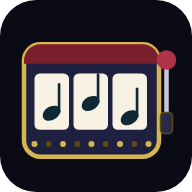

Ce que l’oreille chante, la formule l’écrit.
Ouvrez, jouez et écoutez. Cela fonctionne dans le navigateur de votre ordinateur, de votre tablette ou de votre téléphone : rien à installer, rien à apprendre d’abord.
Si vous savez lire la musique, vous savez déjà l’utiliser. Le clavier de votre ordinateur est l’instrument.
Que souhaitez-vous faire ?
Choisissez une porte. Chacune ouvre directement ce dont vous avez besoin ; le reste, vous le découvrirez ensuite, à votre rythme.

La machine à sous des mesures
Tire le levier et la machine te donne une nouvelle mélodie, à écouter et à jouer au clavier. Avec des prix, des lumières et un chien qui s’appelle Canelo. Elle s’installe sur le téléphone comme une application.
Accorder mon instrument
L’accordeur affiche chaque note avec son vrai nom : Do♯ n’est pas Ré♭. Il utilise le microphone, sur l’ordinateur ou sur le téléphone.
Jouer et écouter
Votre clavier devient un instrument accordé à l’oreille, avec plus de soixante sons : du piano au violon, de l’orgue à la voix.
S’exercer avec accompagnement
Chantez ou jouez votre partie avec le piano qui sonne. Changez la tonalité ou l’instrument, et enregistrez-vous pour vous réécouter. Pour les chanteurs et les instrumentistes.
Enseigner
Écrivez vos exercices dans une partition qui sonne et partagez-les avec vos élèves. Pour les académies et les écoles : 1 € par élève tous les 30 jours.
Trois chemins pour apprendre avec Music Motion
Choisissez le vôtre : chaque chemin a ses supports et son point de départ.
À l’école : l’enseignant qui n’est pas musicien
À l’école primaire, un seul enseignant donne toutes les matières. Avec Music Motion, il peut aussi donner le cours de musique sans formation musicale : des leçons de 50 minutes prêtes à l’emploi, avec le guide pas à pas et une fiche pour que les parents jouent à la maison avec leurs enfants.
- Un ordinateur portable ou une tablette et deux haut-parleurs suffisent : le coût est minime
- Une proposition aussi pour la pédagogie musicale : mémoires, stages ou projets dans les écoles
Pas à pas : découvrir les applications
Des exercices guidés pour découvrir le clavier, la partition, la console et l’accompagnement, l’un après l’autre et à votre rythme. Rien à savoir au préalable.
- Chaque exercice en page web et en PDF, en cinq langues
Pour les musiciens : harmonie, contrepoint, orchestration et composition
Pour les élèves des écoles de musique et des conservatoires, et pour leurs professeurs. Le Coach accompagne l’écriture étape par étape — mélodies, duos, trios et quatuors — avec les règles du contrepoint : il avertit sans bloquer et garde la trace de vos progrès.
- Le coffre d’orchestration : tessiture, caractère et dynamique de chaque instrument
- Des niveaux qui grandissent avec l’élève
Un dièse n’est pas un bémol
Ré♯ et Mi♭ sont deux hauteurs différentes, et ici elles sonnent différemment : dans l’accordeur, sur le clavier et dans la partition. Tout Music Motion repose sur l’accord pythagoricien : des octaves et des quintes pures, sans les arrondis du tempérament, et l’oreille comme juge.
On apprend par immersion progressive : l’accord, l’écriture, l’interprétation, l’accompagnement et l’orchestration, pas à pas, au rythme de celui qui apprend ou de celui qui enseigne.
Deux outils, un seul accord
Ce que vous accordez dans l’un sonne de la même façon dans l’autre : sous les deux se trouve la même table de hauteurs, écrite en rapports exacts.
L’accordeur

Le premier accordeur non tempéré, sur votre ordinateur ou votre téléphone — vous pouvez le télécharger, offert par Music Motion.
Le seul accordeur qui affiche la véritable orthographe musicale : Do♯ ≠ Ré♭. Intonation pythagoricienne pure, avec dièses, bémols, doubles altérations et position tonale. Pour guitare, violon, alto, violoncelle et contrebasse, et un mode libre pour tout instrument.
- Indicateur ♭♭ ♭ ● ♯ ♯♯ : la note avec son nom exact, pas la plus proche
- La4 = 440 Hz, réglable (415 · 430 · 432 · 440 · 442 · 466)
- Depuis le microphone, traité sur votre appareil : rien n’est enregistré ni envoyé. Rien à installer.
La suite
Six applications de navigateur qui dialoguent en temps réel : un moteur sonore pythagoricien, un éditeur de partitions qui joue par degrés, une console de mixage, un banc de timbres, un copiste MIDI et un coach qui enseigne la composition sans théorie préalable.


- Plus de soixante instruments, tous pythagoriciens — le piano compris
- Guide d’utilisation, raccourcis et bibliothèque d’instruments, en espagnol, anglais, français, néerlandais et allemand
- Son propre format, MMF — l’œuvre avec son accord exact et son interprétation à l’intérieur —, avec trois œuvres à télécharger et à ouvrir
Jouez tout de suite : le clavier de votre ordinateur est l’instrument. Voir les raccourcis →
Ce que l’on peut télécharger
Les outils vivent dans le navigateur et ne demandent aucune installation. Ce que l’on télécharge, ce sont les œuvres de démonstration — Bartók, Bach, Ravel et l’Épitaphe de Seikilos — et les exercices pas à pas, à ouvrir dans le Score.